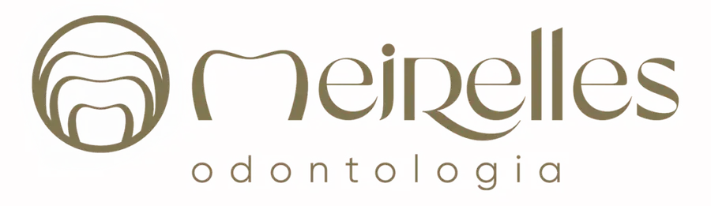
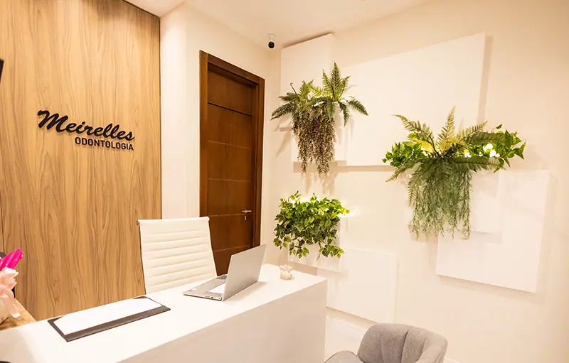
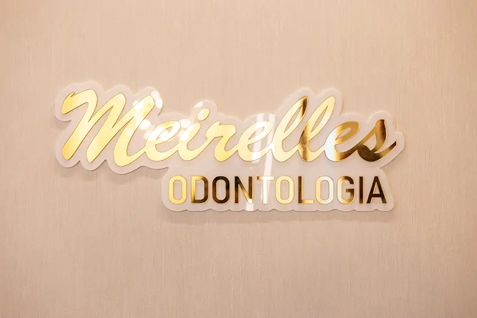
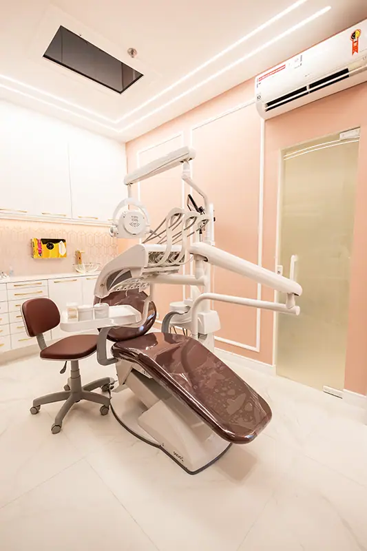
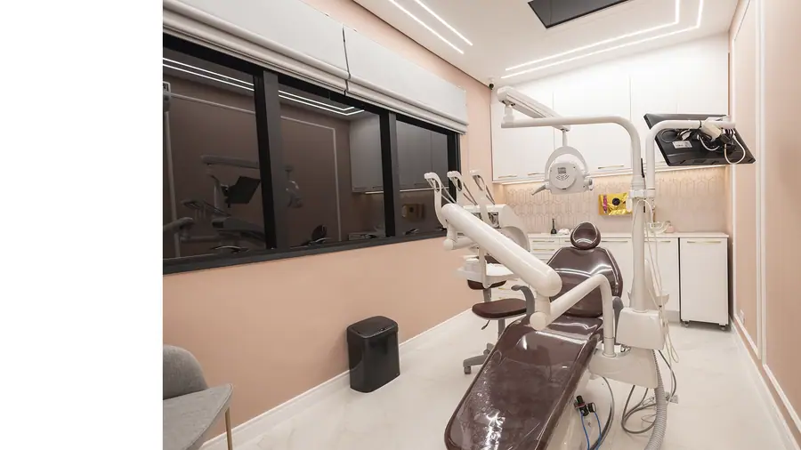
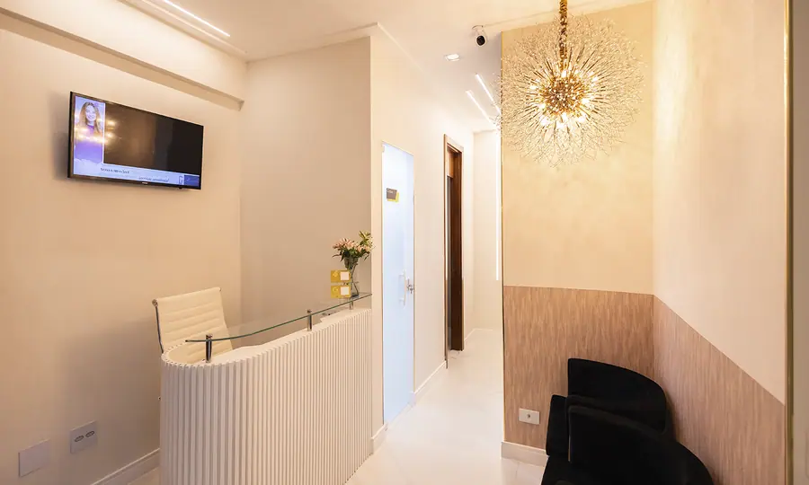

Paleta de cores
Medida no navegador: fundos ponderados pela área ocupada, textos pela quantidade de caracteres. Destaques reúnem cores saturadas e fundos de botão.
Fundos
#F3DAD1
Fundo · 82.4%
rgb(243, 218, 209)
rgb(243, 218, 209)
#1B1B1B
Fundo · 8.5%
rgb(27, 27, 27)
rgb(27, 27, 27)
#CCAA5D
Fundo · 6.8%
rgb(204, 170, 93)
rgb(204, 170, 93)
#807451
Fundo · 1.9%
rgb(128, 116, 81)
rgb(128, 116, 81)
#E4E4E4
Fundo · 0.5%
rgb(228, 228, 228)
rgb(228, 228, 228)
Textos
#1B1B1B
Texto · 86.2%
rgb(27, 27, 27)
rgb(27, 27, 27)
#FFFFFF
Texto · 9.7%
rgb(255, 255, 255)
rgb(255, 255, 255)
#807451
Texto · 3.8%
rgb(128, 116, 81)
rgb(128, 116, 81)
#7F7D7D
Texto · 0.3%
rgb(127, 125, 125)
rgb(127, 125, 125)
Destaques
#CCAA5D
Destaque
rgb(204, 170, 93)
rgb(204, 170, 93)
#807451
Destaque
rgb(128, 116, 81)
rgb(128, 116, 81)
Gradientes
linear-gradient(rgb(214, 186, 175) 0%, rgb(243, 218, 209) 100%)linear-gradient(rgb(255, 255, 255) 24%, rgb(243, 218, 209) 100%)Tipografia
Poppins · Aa Bb Cc 0123
100% do texto · Se a sua cabeça não desliga, esta página é para você.Escala usada (desktop 1440px)
| Tamanho | Peso | Família | Amostra |
|---|---|---|---|
| 38px | 400 | Poppins | Texto de exemplo |
| 32px | 400 | Poppins | Texto de exemplo |
| 22px | 600 | Poppins | Texto de exemplo |
| 20px | 500 | Poppins | Texto de exemplo |
| 16px | 400 | Poppins | Texto de exemplo |
| 16px | 600 | Poppins | Texto de exemplo |
| 14px | 400 | Poppins | Texto de exemplo |
| 13px | 400 | Poppins | Texto de exemplo |
Mobile (390px): 32px/400, 26px/400, 20px/600, 20px/500, 16px/400, 16px/600, 14px/400, 13px/400 · H1 no mobile: sem h1 semântico
Tags
| Tag | Família | Tamanho | Peso | Altura de linha | Espaçamento | Caixa | Cor |
|---|---|---|---|---|---|---|---|
| <h2> | Poppins | 32px | 400 | 32px | normal | none | #1B1B1B |
| <h3> | Poppins | 22px | 600 | 26.4px | normal | none | #1B1B1B |
| <p> | Poppins | 14px | 400 | 21px | normal | none | #1B1B1B |
Botões
Recriados com os estilos computados reais. Efeitos de hover e animação não aparecem aqui; veja a seção de animações.
Renove seu sorriso agora
fundo #CCAA5D · texto #FFFFFF · raio 3px · padding 12px 24px · 20px/500 none · 5x na páginaTransforme seu sorriso hoje
fundo #807451 · texto #FFFFFF · raio 3px · padding 12px 24px · 20px/500 none · 1x na páginaCards e containers
Nenhum card identificado.
Bordas, raios e sombras
3px
0px 0px 50px 50px
15px
50px 50px 0px 0px
30px
25px
Sombras
Sem sombras relevantes.
Espaçamentos
- Largura do conteúdo mais comum: 1140px
- Padding vertical das seções (topo/base): 0px/0px (13x)
- Gaps mais usados (flex/grid): 20px, 5px
- Altura total da página: 5812px em 13 seções
Estrutura e ritmo de cores das seções
Cada faixa é uma seção de topo, com altura proporcional e a cor ou imagem de fundo real.
1. hero Transforme seu Sorriso com Tecnologia de Ponta na Meirelles 720px · padding 0px/0px
2. sobre Sobre a Meirelles Odontologia 689px · padding 0px/0px
3. beneficios Benefícios de Sorrir com a Meirelles 949px · padding 0px/0px
4. sobre Nossa Equipe de Especialistas 540px · padding 0px/0px
5. Nossa Clínica 340px · padding 0px/0px
6. 120px · padding 0px/0px
7. Tecnologia de Ponta para Seu Sorriso 810px · padding 0px/0px
8. cta-final Agende Sua Consulta Agora 410px · padding 0px/0px
9. cta-final Entre em Contato Conosco 469px · padding 0px/0px
10. 450px · padding 0px/0px
11. 238px · padding 0px/0px
12. Adicione o texto do seu título aqui 56px · padding 0px/0px
13. rodape 20px · padding 0px/0px
Animações, ícones e bibliotecas
- Keyframes próprios: ctcBounce, ctc_fadeIn, ht_ctc_anim_corner, ht_ctc_cta_stick
- Animações de entrada do Elementor: nenhuma
- Classes de scroll reveal da casa: nenhuma
- Ícones: 15 SVG, 0 ícones de fonte
- Bibliotecas e tags detectadas: ga4, gtm, jquery, swiper
Snippets da biblioteca presentes nesta página
- Nenhum snippet da biblioteca identificado.
Imagens do site





